XRP Enterprise Platform
One Platform. One Workflow. Complete Operational Visibility.
XRP Enterprise Platform unifies ERP, Manufacturing, Warehouse Management, Transportation Management, Mobile Operations, and Financial Management into a single integrated business platform.
Designed for organizations that have outgrown disconnected systems and spreadsheets, XRP provides complete visibility from customer demand through production, fulfillment, transportation, delivery, invoicing, and financial reporting.
Whether managing a single facility or multiple plants, XRP delivers real-time operational control, enterprise scalability, and actionable business intelligence across every department.
ERP
Financial ManagementManufacturing
BOM & AssemblyWMS
Warehouse ExecutionTMS
Transportation ManagementMulti-Plant
Enterprise Growth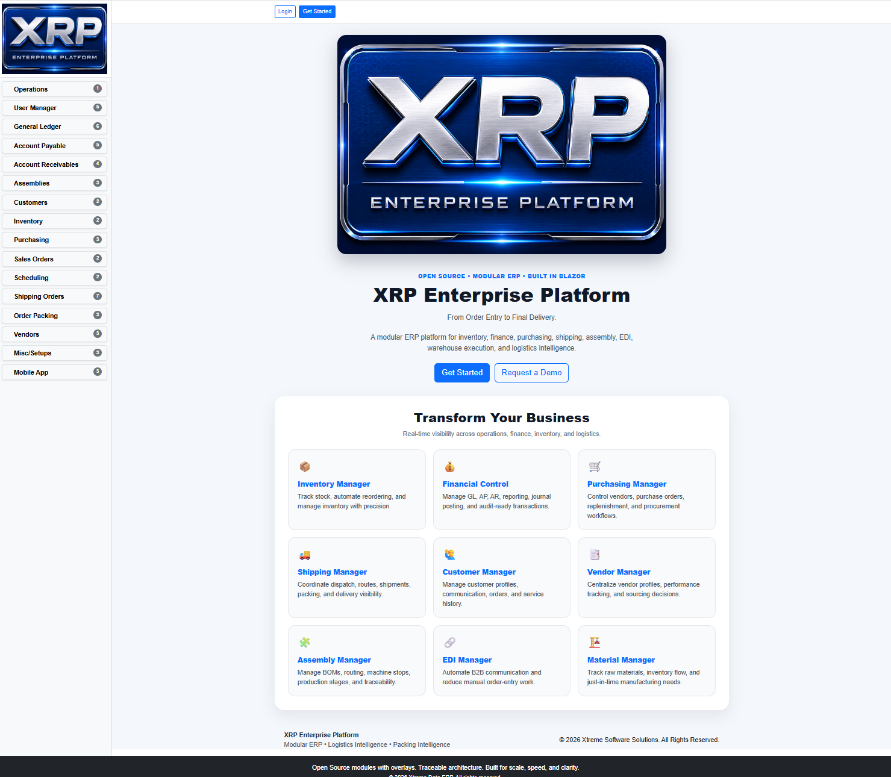
The XRP Vision
XRP replaces disconnected software silos with a unified enterprise platform where customers, vendors, inventory, manufacturing, warehouse operations, transportation, mobile delivery, and financial management operate from a single operational data model.
Real-Time Visibility
Monitor inventory, production, fulfillment, transportation, and financial activity in real time across the enterprise.
Workflow Integration
Connect sales, purchasing, manufacturing, warehouse execution, logistics, mobile operations, and accounting into a single workflow.
Enterprise Scalability
Support multi-plant operations, shared services, customer-specific deployments, and future organizational growth.
Operational Intelligence
Transform operational data into actionable insights that improve efficiency, decision-making, profitability, and customer service.
Open Source Platform
Built on an open-source architecture with GitHub-managed source code, AI-assisted development, and Codex-connected engineering workflows.
Technical Mission
XRP is built with a practical technical mission: give organizations a modern, transparent, open-source enterprise platform that can be owned, extended, integrated, and adapted without being locked into a closed software ecosystem.
The platform is designed around Blazor Server, Microsoft SQL Server, and an extensible data architecture that can interface with SQL Server, Oracle, MySQL, and customer-specific database environments. XRP is built for real operational systems, not just presentation screens.
By combining open-source ownership with AI-assisted development workflows and Codex-connected engineering, XRP can evolve quickly while keeping the source code, business logic, workflows, and deployment model visible and controllable.
Platform Architecture
ERP + Manufacturing + WMS + TMS + Mobile + Financials + Logistics Intelligence. Every module shares a common operational workflow and data model.
- One platform
- One operational data model
- Open-source ownership model
- Real-time operational visibility
- Multi-plant enterprise architecture
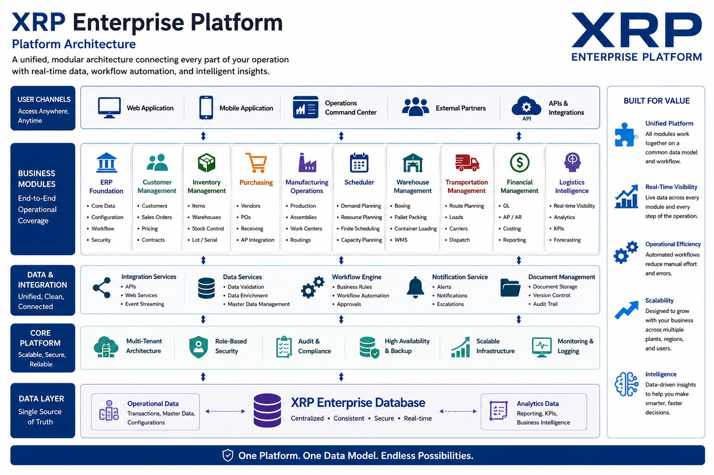
End-to-End Workflow
XRP follows the full operational lifecycle from customer demand through fulfillment, shipment execution, delivery, invoicing, and financial reporting.

ERP Foundation
XRP provides the operational foundation for managing customers, vendors, inventory, purchasing, sales orders, manufacturing, warehouse execution, route planning, mobile delivery, logistics, and financials.
Customer Management
Centralized customer records connected to sales orders, shipments, invoices, and payments.
Vendor Management
Supplier visibility across purchasing, vendor parts, payables, and procurement workflows.
Inventory Management
Connect inventory items to vendors, assemblies, components, routes, costing, and fulfillment.
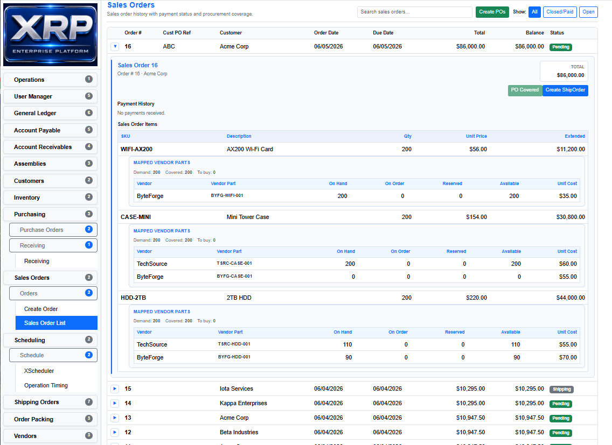
Customer Management
Customer Management provides a centralized platform for managing customer accounts, sales activity, fulfillment visibility, shipment history, invoices, payments, and service interactions across the enterprise.
Every customer record becomes part of the full operational workflow, connecting order entry, inventory allocation, production, packing, delivery, and receivables.
- Customer account visibility
- Sales order integration
- Shipment and delivery history
- Accounts receivable visibility
- Multi-location customer support
Vendor Management
Vendor Management provides a centralized platform for managing supplier relationships, purchasing activity, vendor parts, procurement workflows, supplier accountability, and accounts payable integration.
XRP connects vendors directly to inventory sourcing, purchase orders, receiving, costing, financial obligations, and operational planning.
- Vendor account management
- Vendor part mapping
- Purchase order integration
- Supplier performance visibility
- Accounts payable integration
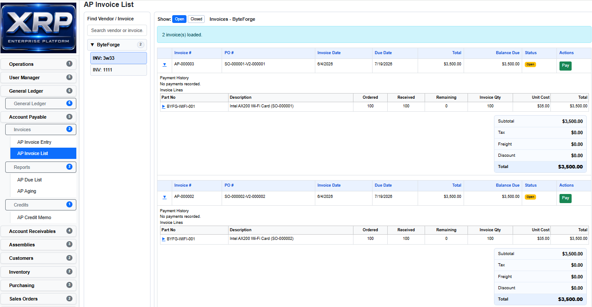
Inventory Management
Inventory Management connects products, assemblies, components, vendor parts, costing, warehouse movement, sales demand, and fulfillment execution into a single operational view.
XRP does more than track stock. It maps inventory to the complete lifecycle: purchasing, assembly, scheduling, boxing, palletization, container loading, transportation, mobile delivery, and financial reporting.
- Real-time inventory visibility
- Assembly and component mapping
- Vendor part allocation
- Inventory reservations
- FIFO costing and valuation
- Traceability from receipt to shipment
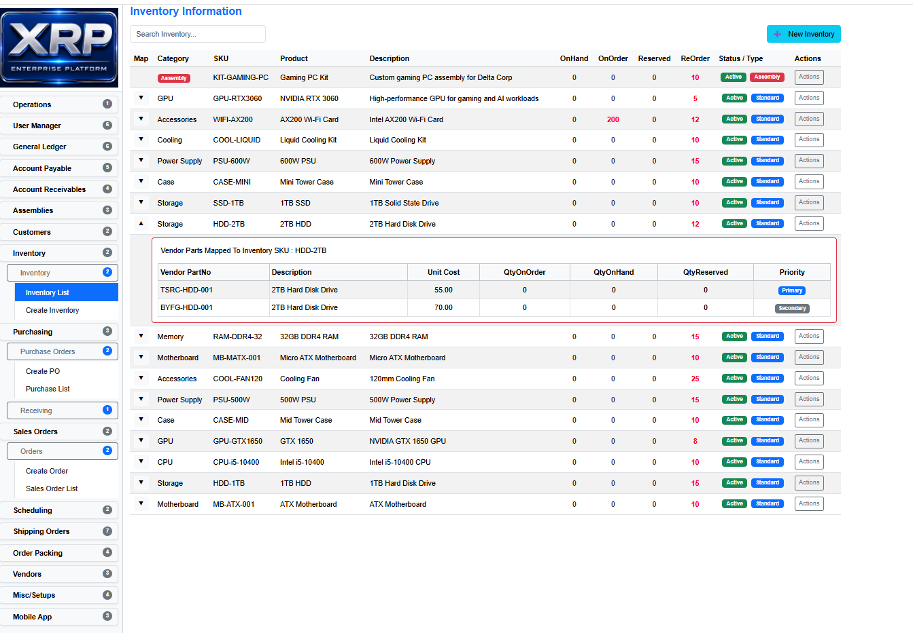
Manufacturing Operations
XRP provides an integrated manufacturing platform that connects engineering, production, inventory, scheduling, warehouse operations, and financial costing into a single operational workflow.
Production processes are driven through Bills of Material (BOM), Assembly Routes, Machine Stops, and configurable Assembly Lines, enabling organizations to standardize manufacturing procedures while maintaining flexibility across products and facilities.
Every manufacturing transaction remains connected to inventory consumption, labor activity, scheduling, traceability, and finished goods production, providing complete visibility from raw materials through completed assemblies.
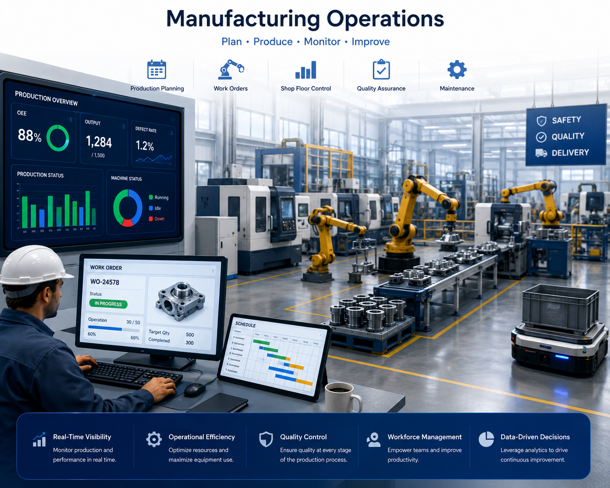
Assembly Management
Assembly Management connects bills of material, component requirements, machine stops, production routes, inventory consumption, and finished-goods creation into a repeatable manufacturing workflow.
XRP allows each assembly to carry its own route structure, operational steps, component relationships, and traceability path so production can be planned, scheduled, executed, and costed from the same data foundation.
- Bill of Material management
- Assembly route planning
- Machine stop sequencing
- Component consumption tracking
- Finished-goods production visibility
- Assembly costing and traceability
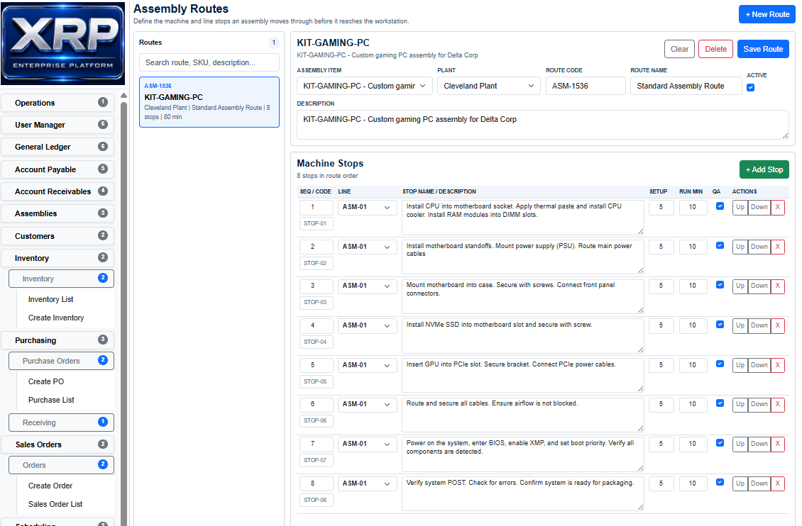
Assembly Builds
Assembly Builds provide the operational execution layer of manufacturing, transforming planned assemblies into finished goods through controlled production workflows, material consumption, labor execution, and real-time production tracking.
XRP enables operators to execute assembly work directly from the workstation while maintaining complete visibility into production status, component usage, routing progress, machine activity, and finished-goods output.
Every build remains connected to its Bill of Material, Assembly Route, Inventory Transactions, and Manufacturing History, providing complete traceability from raw materials to finished product.
- Real-time assembly execution
- Workstation-driven production workflows
- Material consumption tracking
- Assembly route execution
- Production status visibility
- Finished goods creation
- Manufacturing traceability
- Assembly labor and activity tracking
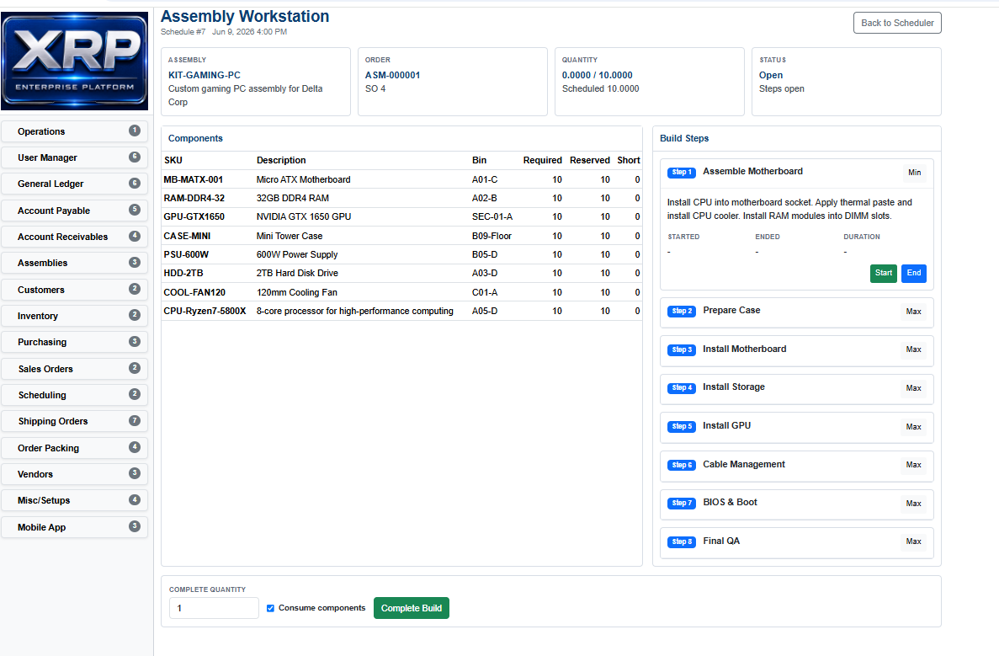
Production Scheduler
The Multi-Plant Production Scheduler serves as the operational command center for manufacturing, warehouse execution, and logistics planning. It coordinates assembly builds, boxing operations, pallet packing, container loading, route preparation, and shipment execution through a single integrated workflow.
XRP allows planners and operations teams to schedule work before execution, monitor progress in real time, and manage resources across production, fulfillment, transportation, and delivery activities. Every scheduled event remains connected to inventory, assemblies, customer orders, shipping requirements, and operational status updates.
The Scheduler provides visibility into work that is planned, in progress, completed, packed, palletized, loaded, dispatched, and delivered. By connecting manufacturing and logistics operations into a unified workflow, organizations gain improved resource utilization, reduced bottlenecks, and greater operational control.
- Assembly build scheduling
- Production resource planning
- Boxing and packing coordination
- Pallet packing workflows
- Container loading preparation
- Route planning integration
- Dispatch and shipment execution
- Real-time operational visibility
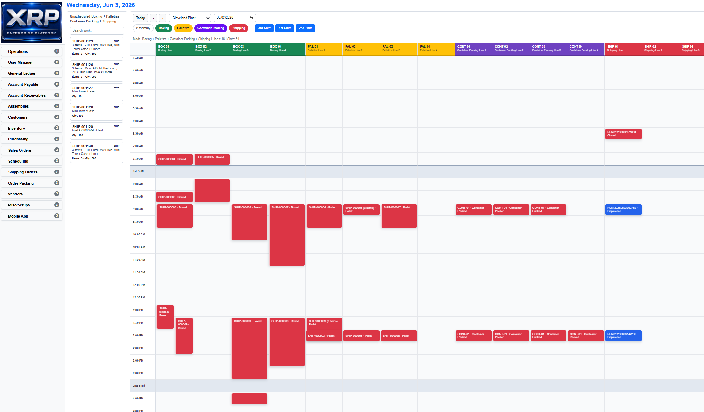
Boxing, Packing & Manifesting
Boxing, Packing, and Manifesting provide the operational execution layer that transforms customer orders into shipment-ready freight. XRP orchestrates the fulfillment workflow from packed cartons and palletized freight to shipment manifests, route preparation, and transportation execution.
Every box, pallet, and shipment remains connected to the original customer order, providing complete visibility, traceability, and operational control throughout the fulfillment lifecycle.
- Intelligent boxing and packing workflows
- Shipment consolidation and manifest generation
- Pallet and freight preparation
- Transportation readiness validation
- End-to-end order traceability
- Real-time fulfillment visibility
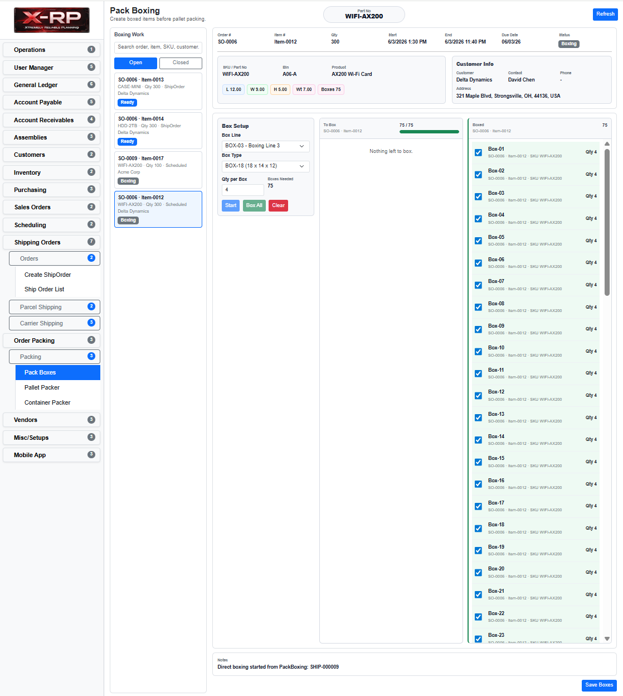
Container Loading & Route Intelligence
XRP helps operations plan how pallets, containers, trailers, routes, and customer stops come together before freight leaves the dock.
Teams can visualize load placement, route sequence, pallet grouping, trailer capacity, and shipment readiness in a single operational workflow. This improves loading accuracy, route confidence, and delivery execution.
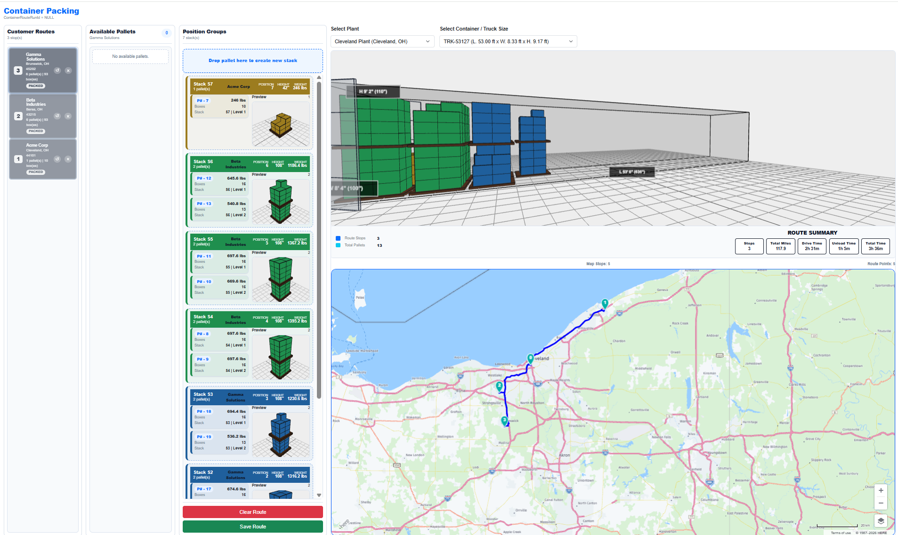
Route Planning & Dispatch
Route Planning connects shipment demand, customer stops, container loading, dispatch preparation, driver execution, and delivery visibility into a single transportation workflow.
XRP helps operations plan routes before freight leaves the dock by organizing stops, sequencing deliveries, estimating route activity, coordinating load order, and preparing driver-ready execution data.
- Customer stop sequencing
- Route run planning
- Truck and container load coordination
- Dispatch readiness validation
- Driver mobile workflow preparation
- Delivery status visibility
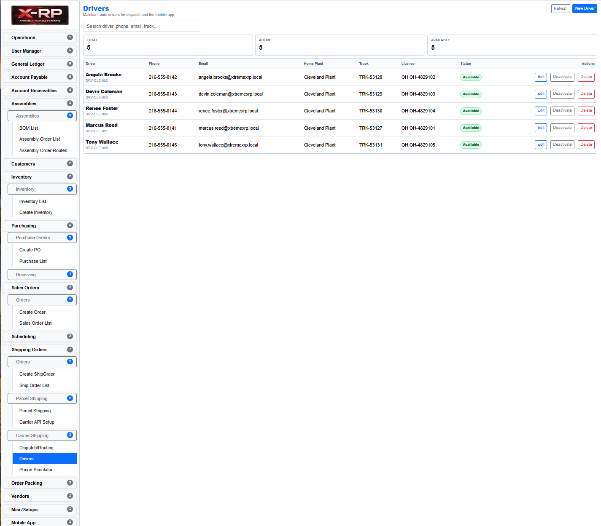
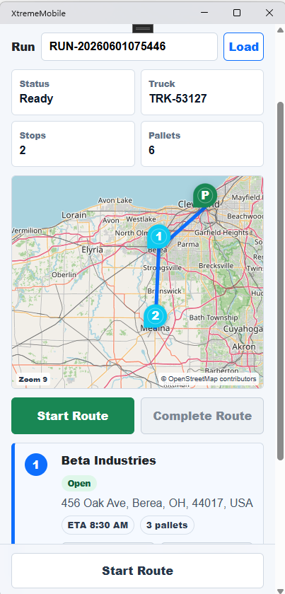
Driver Mobile Application
Extend XRP beyond the warehouse and dispatch office into the field. Drivers receive route assignments, execute deliveries, update shipment status, and remain connected to enterprise operations in real time.
Mobile execution closes the operational loop between transportation, customer delivery, shipment visibility, and future proof-of-delivery workflows.
Transportation Management
Transportation Management connects route planning, dispatch, shipment coordination, container loading, driver execution, mobile activity, and delivery tracking into a single workflow.
XRP gives logistics teams operational control over what is shipping, where it is going, how it is loaded, who is delivering it, and how delivery execution connects back to the original customer order.
- Route planning and dispatch
- Shipment coordination
- Container and truck loading visibility
- Driver mobile readiness
- Delivery execution visibility
Financial Management
XRP financials connect General Ledger, Accounts Payable, Accounts Receivable, reporting, journal entries, account balances, and audit-ready transaction tracking.
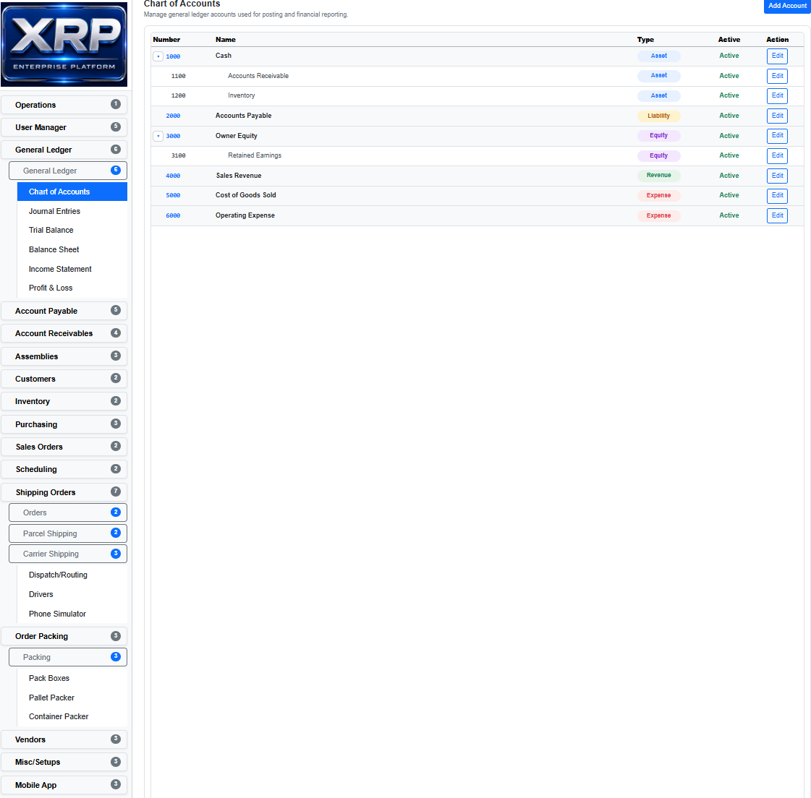
Chart of Accounts
Standardized account structure for financial control and reporting.
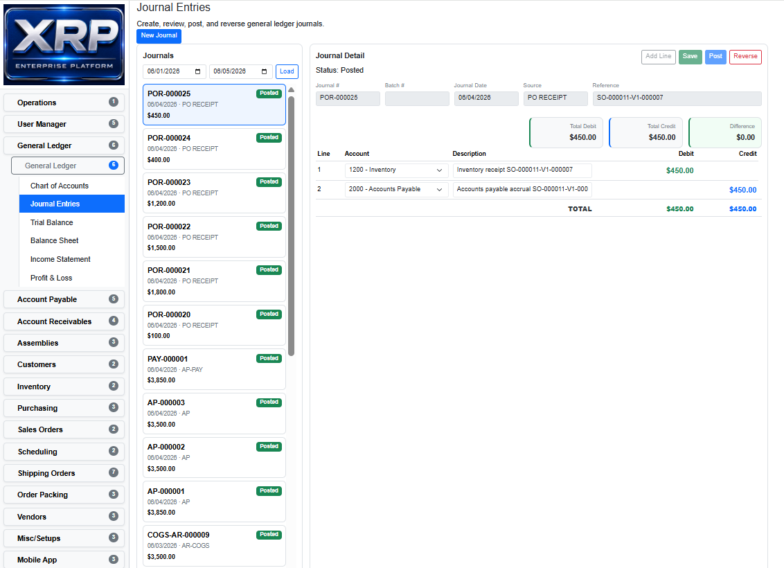
Journal Entries
Audit-ready posting, review, and transaction traceability.
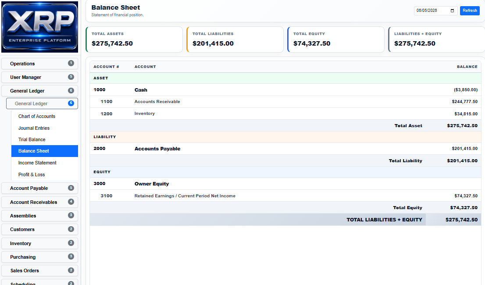
Balance Sheet
Real-time view of assets, liabilities, and equity.
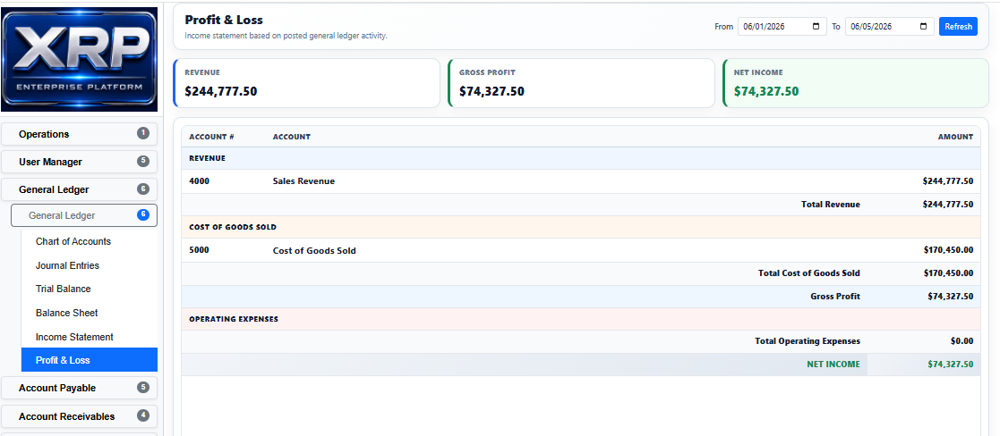
Profit & Loss
Revenue, expense, and profitability reporting.
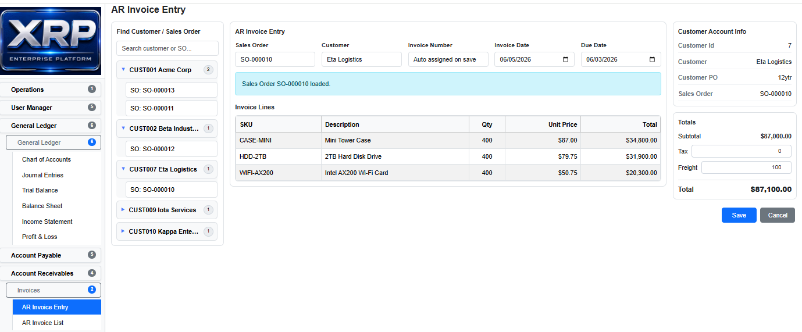
Accounts Receivable
Customer invoices, payments, balances, and collections visibility.
Accounts Payable
Vendor invoices, payment obligations, liabilities, and supplier controls.
Identity & Security
Security provides centralized management for user access, authentication, authorization, roles, permissions, and audit controls across the enterprise.
XRP supports governance, accountability, and controlled access across business applications and operational data.
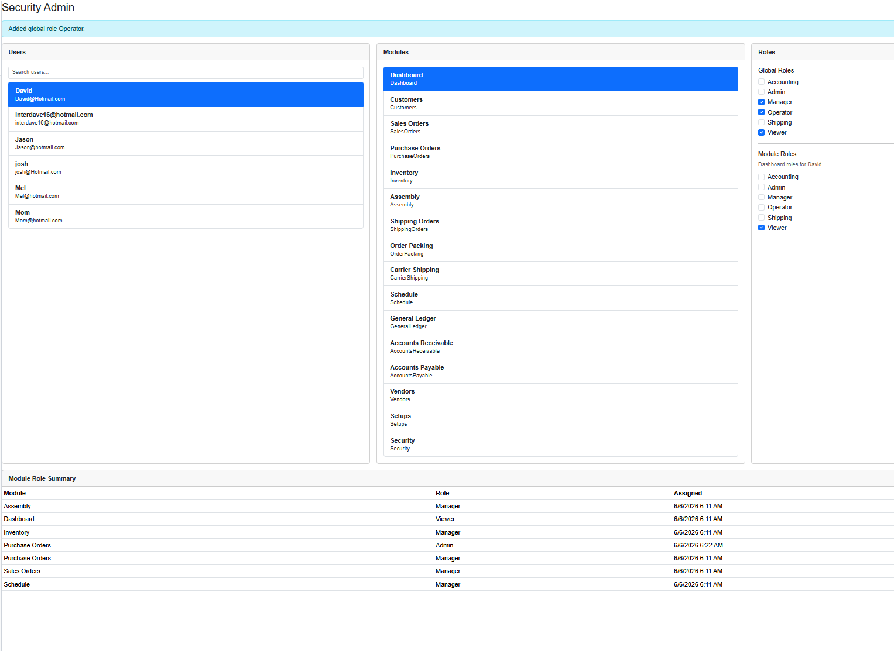
Future Roadmap
Future enhancements include GPS tracking, proof-of-delivery, advanced carrier integration, predictive scheduling, AI-assisted planning, enhanced analytics, and expanded logistics intelligence.
GPS Tracking
Live route and driver visibility.
Proof of Delivery
Mobile delivery confirmation workflows.
Carrier Integration
FedEx, UPS, DHL, and future carrier support.
AI Planning
Predictive scheduling and smarter logistics decisions.